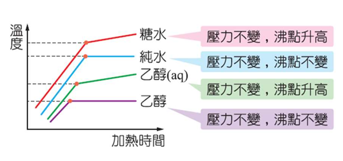

溶液的依數性質
沸點上升、凝固點下降與滲透壓
沸點上升與凝固點下降
沸點上升 ($\Delta T_b$)
加入非揮發性溶質後，溶液蒸氣壓下降，導致沸點比純溶劑高。
$\Delta T_b = K_b \times C_m \times i$
$K_b$：莫耳沸點上升常數 (水為 $0.52\text{ }^\circ\text{C/m}$)
$C_m$：重量莫耳濃度
$i$：凡特荷夫因子 (解離出的粒子數)


凝固點下降 ($\Delta T_f$)
無論溶質是否具揮發性，溶液的凝固點均會比純溶劑低。
$\Delta T_f = K_f \times C_m \times i$
$K_f$：莫耳凝固點下降常數 (水為 $1.86\text{ }^\circ\text{C/m}$)
$C_m$：重量莫耳濃度
$i$：凡特荷夫因子

≡